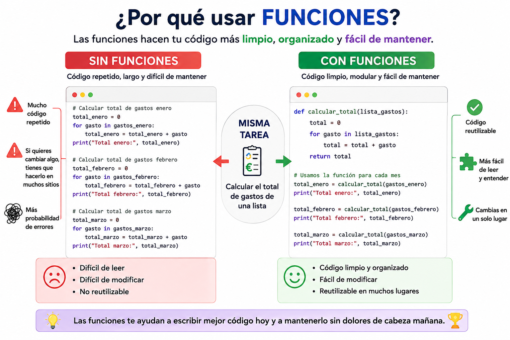

1. Conocemos las funciones
Una función es un bloque de código con nombre propio que realiza una tarea concreta. La defines una vez y la puedes llamar todas las veces que necesites desde cualquier parte de tu programa.
Definición
Para crear una función en Python utilizamos la palabra clave reservada def (de definir), seguida del nombre que queramos darle, unos paréntesis y dos puntos. Todo el código que vaya dentro (tabulado) pertenece a la función.
¡Importante! Cuando defines una función, el ordenador simplemente la guarda en su memoria y la aprende, pero no ejecuta el código todavía.
#Sintaxis definición función con retorno y parámetros de entrada
def nombre_funcion(parametro1, parametro2):
# bloque de código
return resultadoSintaxis definición función sin retorno y sin parámetros
def nombre_funcion():
# bloque de código
# Ejemplo creación de función <br># Creamos la función una sola vez
def mostrar_menu():
print("--- GESTOR DE GASTOS ---")
print("1. Añadir nuevo ticket")
print("2. Ver historial")
print("3. Salir")Llamada
Para que el código de la función se ejecute de verdad en la pantalla, tienes que invocarla por su nombre escribiendo los paréntesis. Puedes hacerlo tantas veces como quieras a lo largo de tu programa, ahorrando muchísimas líneas de código.
Tenemos que tener en cuenta si la función tiene o no retorno al hacer la llamada:
- Funciones con retorno: Cuando una función calcula algo que necesitas usar después, utiliza return para devolver el resultado.
#Función con retorno
# 'importe' es el parámetro (el ingrediente que necesita la función)
def calcular_con_iva(importe):
total = importe * 1.21
return total # La función devuelve el resultado calculado
# Llamamos a la función enviándole un 10 y guardamos el resultado
precio_final = calcular_con_iva(10)
print("El precio con IVA es:", precio_final)- Funciones sin retorno: No todas las funciones devuelven un valor. Algunas simplemente realizan una acción, como mostrar información por pantalla.
# Función sin retorno
# Llamamos a la función dos veces seguidas
mostrar_menu()
mostrar_menu()También podemos mandarle datos a la función para que trabaje con ellos, son los parámetros, variables que ponemos dentro de los paréntesis.
Una función debería hacer una sola cosa y hacerla bien. Si tu función se llama registrar_gasto, solo debería registrar el gasto, no calcular totales ni mostrar menús. Esto se llama el principio de responsabilidad única y hace el código mucho más fácil de entender y mantener.
Ámbito de variables
Cuando trabajas con funciones surge una pregunta importante: ¿pueden las funciones ver y modificar las variables que has creado fuera de ellas? La respuesta depende del ámbito (scope en inglés) de cada variable.
En Python existen dos tipos de variables según dónde se han creado:
- Variable local: creada dentro de una función. Solo existe mientras la función se ejecuta y desaparece cuando termina. No es accesible desde fuera.
- Variable global: creada fuera de cualquier función. Es accesible desde cualquier parte del programa, incluso desde dentro de las funciones, aunque solo para leerla.
presupuesto = 500 # Variable GLOBAL — accesible en todo el programa
def comprobar_presupuesto(total):
margen = presupuesto - total # Lee la variable global
limite = 0.80 # Variable LOCAL — solo existe aquí
if total > presupuesto * limite:
print(f" Llevas más del 80%. Margen restante: {margen:.2f} €")
comprobar_presupuesto(420)
print(limite) # ERROR: limite no existe fuera de la función¿Puedo modificar una variable global desde dentro de una función?
Por defecto no. Si intentas asignar un nuevo valor a una variable global dentro de una función, Python crea una variable local con el mismo nombre sin modificar la global. Para modificarla explícitamente debes usar la palabra reservada global:
total_mes = 0 # Variable global
def registrar_gasto(importe):
global total_mes # Indicamos que usamos la variable global
total_mes += importe # Ahora sí modifica la variable global
registrar_gasto(45.50)
registrar_gasto(32.00)
print(f"Total acumulado: {total_mes} €") # 77.50 €Usar la palabra reservada global funciona pero no es una buena práctica. Lo más recomendable es pasar la variable como parámetro y devolverla con return. Así el código es más limpio y predecible.
2. Repasamos lo aprendido
Responde todas las preguntas del cuestionario.
00:00:
3. Refactoriza tu Gestor
Ha llegado el momento de dar un gran salto de calidad en tu Gestor de Gastos. Toma el programa que construiste en el bloque de estructuras de datos y refactorízalo usando funciones: divide el código en funciones con responsabilidad única, una por cada acción del menú.
Las funciones que debes crear:
def mostrar_menu(categorias):
# Muestra el menú con las categorías disponibles
def registrar_gasto(gastos, totales, categorias):
# Pide importe y categoría, valida y registra
# Devuelve True si se registró, False si no
def mostrar_gastos(gastos):
# Muestra todos los gastos de la lista
def mostrar_resumen(totales):
# Muestra el total por categoría
def mostrar_categorias_usadas(gastos):
# Muestra las categorías únicas usadasEl bucle principal debería quedar así de limpio:
while True:
mostrar_menu(CATEGORIAS)
opcion = input("Elige una opción: ")
if opcion == "1":
registrar_gasto(gastos, totales, CATEGORIAS)
elif opcion == "2":
mostrar_gastos(gastos)
elif opcion == "3":
mostrar_resumen(totales)
elif opcion == "4":
mostrar_categorias_usadas(gastos)
elif opcion == "5":
print(" ¡Hasta pronto!")
break
else:
print(" Opción no válida.")Mostrar retroalimentación
# Gestor de Gastos — Versión con funciones
CATEGORIAS = ("comida", "transporte", "ocio", "casa", "salud")
def mostrar_menu(categorias):
print("\n=== MENÚ DEL GESTOR ===")
print(f"Categorías: {', '.join(categorias)}")
print("\n1. Registrar gasto")
print("2. Ver todos los gastos")
print("3. Ver resumen por categoría")
print("4. Ver categorías usadas")
print("5. Salir")
def registrar_gasto(gastos, totales, categorias):
importe = float(input("Importe: "))
categoria = input("Categoría: ").lower()
if categoria not in categorias:
print(f" Categoría no válida.")
return False
gastos.append({"importe": importe, "categoria": categoria})
totales[categoria] = totales.get(categoria, 0) + importe
print(" Gasto registrado correctamente.")
return True
def mostrar_gastos(gastos):
if not gastos:
print(" No hay gastos registrados.")
return
print(" Listado de gastos:")
for g in gastos:
print(f" - {g['categoria']}: {g['importe']} €")
def mostrar_resumen(totales):
if not totales:
print(" No hay datos todavía.")
return
print(" Resumen por categoría:")
for cat, total in totales.items():
print(f" - {cat}: {total:.2f} €")
def mostrar_categorias_usadas(gastos):
if not gastos:
print(" No hay categorías usadas todavía.")
return
usadas = set([g["categoria"] for g in gastos])
print(f" Categorías usadas: {usadas}")
# Programa principal
gastos = []
totales = {}
while True:
mostrar_menu(CATEGORIAS)
opcion = input("\nElige una opción: ")
if opcion == "1":
registrar_gasto(gastos, totales, CATEGORIAS)
elif opcion == "2":
mostrar_gastos(gastos)
elif opcion == "3":
mostrar_resumen(totales)
elif opcion == "4":
mostrar_categorias_usadas(gastos)
elif opcion == "5":
print(" ¡Hasta pronto!")
break
else:
print(" Opción no válida. Elige entre 1 y 5.")¿Tu programa no funciona? Comprueba esto:
- ¿Cada función hace solo una cosa?
- ¿Pasas las variables como parámetros en lugar de usar global?
- ¿Las funciones que modifican datos reciben la lista o diccionario como parámetro?
- ¿El bucle principal llama a las funciones correctamente?
Reto extra
Crea una función calcular_estadisticas(gastos) que devuelva en un diccionario el total, la media, el gasto máximo y el mínimo del mes.
4. Importante
Definir funciones
def (definir), es la palabra clave para crear una función. Le enseña al ordenador cómo hacer una tarea, agrupando varias líneas de código bajo un solo nombre.
Invocar funciones
Para usar una función que ya existe, solo tienes que escribir su nombre seguido de paréntesis, por ejemplo: mostrar_menu()
Retorno de funciones
return (devolver), se utiliza dentro de la función cuando queremos que el resultado de un cálculo o proceso sea devuelto al programa principal para poder guardarlo en una variable y seguir trabajando con él.
Apoyo visual
